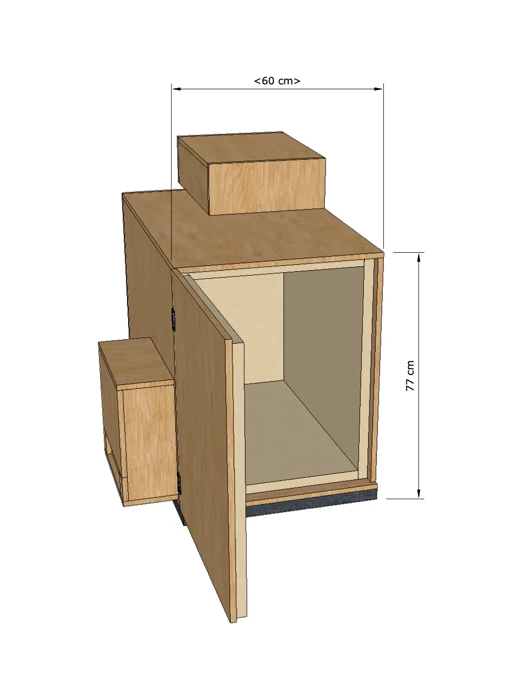
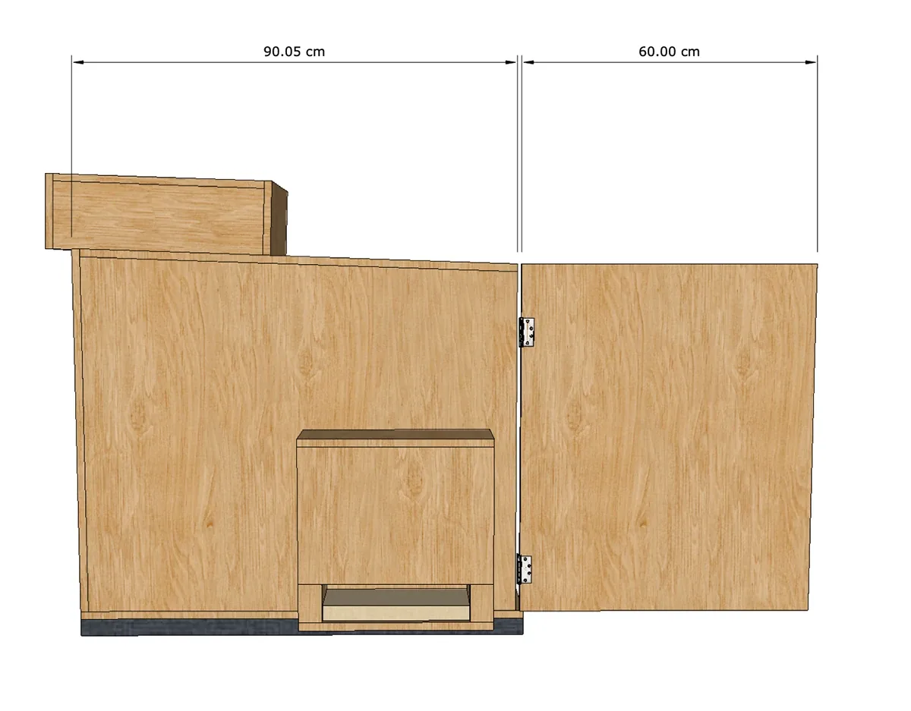
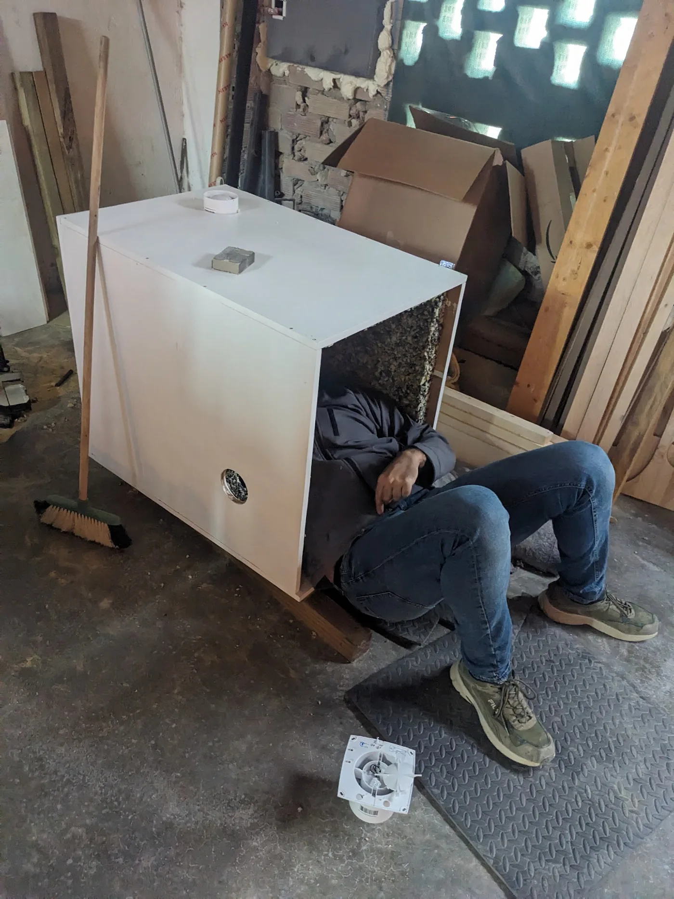
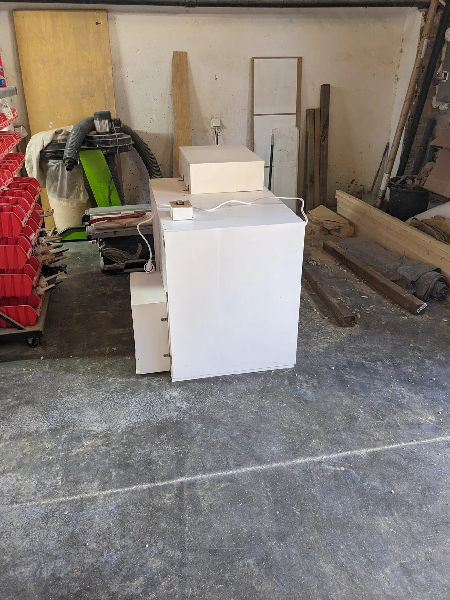

Sound Isolation Box
A compact enclosure balancing acoustic control, airflow and weather protection.
Built
This project responded to a specific problem for a dental studio: an outdoor air-compressor unit was producing disruptive noise, but any enclosure also needed to keep the machine safely ventilated and protected from rain. I led the process from research and concept development through the client pitch, construction and installation.
The timber box uses protected air openings to maintain circulation while interrupting direct paths for sound and water. Rigid construction and rubber isolation elements help limit vibration and resonance. The form remains deliberately straightforward, allowing the enclosure to be opened for access and maintenance.
- Location
- Granada, ES
- Year
- 2025
- Status
- Designed + built
- Type
- Applied Design · Fabrication
- With
- El Secadero de Reviverdes




The enclosure was made largely from timber left over from an earlier project, with durability and performance taking priority over finish. Once installed, it substantially reduced the compressor noise while maintaining safe operating temperatures. The project is a small but useful example of how spatial thinking, material knowledge and prototyping can resolve an everyday technical problem.
Have a place, programme or experience to improve?
Explore design consultancy